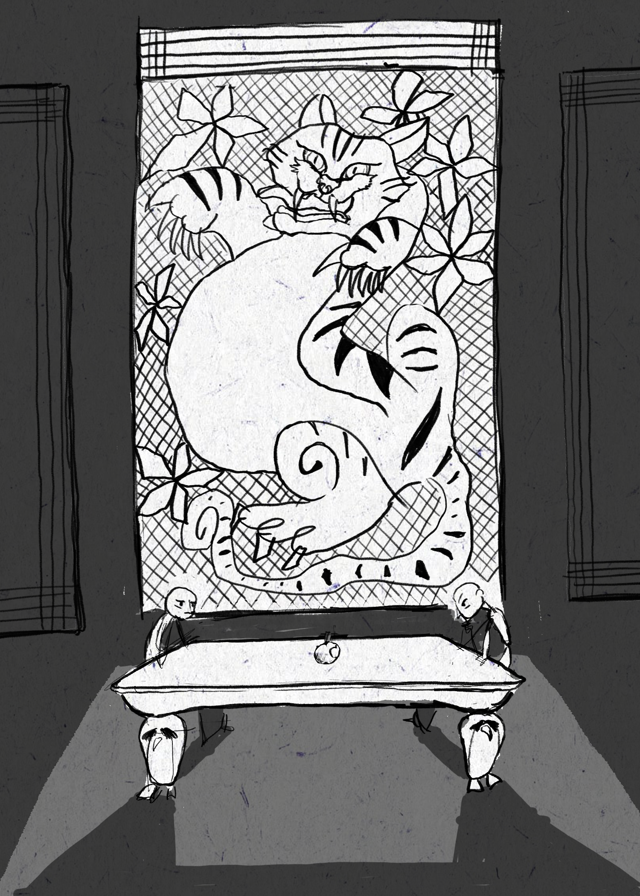

EUCATION
08/2022 – 07/2025 Parsons School of Design (BFA) – Communication Design
03/2018 – 02/2021 Seoul Institute of the Arts (AA) – Creative Advertising / GPA(3.4/4.0)
CAMPUS ENGAGEMENT
03/2018 - 02/2021
Club Creation& President
Inspired by the fairy tale ‘Bremen Musician town’, I created
an amateur orchestra club.
INTERNSHIP
2018 11 - 201812
MSV STUDIO (animation sutido) - SNS CONTESNTS MAKER
I produced SNS contents to promote animation.
WORK EXPERIENCE
11/ 2021 – 7/2022
TOWMOO (classical music company) - WRITER
I wrote an interesting script to introduce classical music to the public.
SKILLS
My Drawings
Self Portrait
Karma
Bach's Fuga
My Animation
Utopia

Moon & Sun's talking
Sun
Moon & Sun
Moon
My Designs
Shamanistic politics
Musical font
Pet funeral design
I worked for classical music company!
I was a writer in this company and thought of various interesting content ideas such as not using English
to teach music and taking lessons from an amateur adult from prodigy.
In this process, I met various people and developed communication and decision-making skills.
I received several awards
I received an award from the Indonesian Embassy for my Vlog while living in Indonesia for a month.
I made an Orchestra Club!
I suddenly fell in love with classical music at the age of 21, so I made an orchestra club.
Inspired by the fairy tale book Bremen Musician, the goal was to approach classical music in a friendly manner.
tried to use the power of innocence of fairy tales.
Through this process, I developed true communication skills and gained leadership with various friends.
and we was awarded the best club award in the school.
I love my hobby!
In this video, I play the piano by myself and play the violin and cello.
I love my hobby. Music activities expand my world.

08/2022 – 07/2025 Parsons School of Design (BFA) – Communication Design 03/2018 – 02/2021 Seoul Institute of the Arts (AA) – Creative Advertising / GPA(3.4/4.0) CAMPUS ENGAGEMENT 03/2018 - 02/2021 Club Creation& President Inspired by the fairy tale ‘Bremen Musician town’, I created an amateur orchestra club. INTERNSHIP 2018 11 - 201812 MSV STUDIO (animation sutido) - SNS CONTESNTS MAKER I produced SNS contents to promote animation. WORK EXPERIENCE 11/ 2021 – 7/2022 TOWMOO (classical music company) - WRITER I wrote an interesting script to introduce classical music to the public. SKILLS